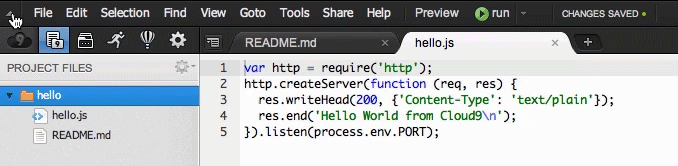
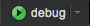
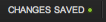
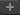

IDE Overview
Note:
this article is outdated, a new version will follow soonCloud9 IDE can be thought of as being divided into the following components:

Throughout the documentation, we'll refer to these sections by name. We can identify several distinct areas in the editor:
- The top menu bar is the uppermost area, with easy access to a variety of menus
- The project bar on the left lets you manipulate various aspects of your project, including its active files, preferences, and choices for deployment
- The panel displays views according to what's been selected in the project bar
- The toolbar is on the far right, where you can find tools used when debugging your code. Projects that are open with collaboration also make use of this panel for chatting.
- The code editor is the main area where you write your code.
- The console is the bottom area of the window. It's an expandable area that can act like a desktop terminal to enter command line input (like
lsormkdir). It also displays output provided by your program's print statements (likeconsole.log()), as well as providing an area for search results
The Project Bar, Tool Bar, and Console are powerful features, so their documentation is provided separately. We'll talk about the rest of the editor below:
Remember: nearly every UI element can be collapsed, in order to provided a more harmonious coding experience. For example, clicking on the buttons in the upper left of the editor allows you to hide the panels and top menu bar:

The Top Menu Bar

In this section, you can find the usual menus for creating and saving files, changing your view, applying a new theme for the editor, and switching between windows.
In the middle of the menu bar you'll find the debug button: . This is used for running and debugging your code. For more information, see the section on "Running and Debugging Your Code"..
The preview button  provides you with a look of what the currently active file would look like in the browser. For text files, this is usually just the raw text, but certain files, like HTML or XML, render as the actual markup.
provides you with a look of what the currently active file would look like in the browser. For text files, this is usually just the raw text, but certain files, like HTML or XML, render as the actual markup.
The autosave button indicates the status of your current saves: . Files are saved automatically by Cloud9 IDE, and every revision is made available for you to browse through. For more information, see the section on revisions and saving.
On the far right of the menu, near the Cloud9 IDE logo, there are two more icons: one to return to the dashboard, and one to return to the Cloud9 IDE homepage.
The Code Editor
This is where most of the action happens. Every file you open appears here as a tab. You can open a new file easily by clicking on the  button to the right of the last tab. Cloud9 IDE offers syntax highlighting for over two dozen programming languages.
The code editor supports a large number of keyboard shortcuts to increase your productivity. For an up-to-date list of these within the IDE, simply go to .
If you hover over to the upper-right corner, you can activate zen-mode, which is a full screen coding environment.
At the lower-right corner, you can find the status bar.